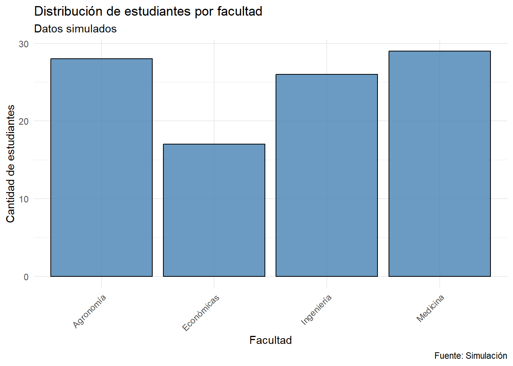

ggsave(
filename,
plot = last_plot(),
device = NULL,
path = NULL,
scale = 1,
width = NA,
height = NA,
units = c("in", "cm", "mm"),
dpi = 300,
limitsize = TRUE
)16 Exportación de Resultados de Análisis en R
La exportación de resultados constituye una etapa fundamental en el análisis estadístico de datos, ya que permite almacenar y compartir los productos del análisis, como gráficos y tablas, para su posterior utilización en informes, presentaciones o análisis adicionales. La correcta elección del formato de exportación garantiza la accesibilidad, reutilización y compatibilidad de los resultados con otras herramientas y plataformas (R Core Team, 2023; Wickham, 2016). Además, una exportación adecuada contribuye a la reproducibilidad y trazabilidad de los análisis, aspectos cruciales en la ciencia de datos moderna (Gentleman & Temple Lang, 2007; National Academies of Sciences, Engineering, and Medicine, 2019).
En el contexto del análisis estadístico clásico, la exportación de resultados facilita la comunicación de hallazgos y la integración de los mismos en documentos científicos, reportes técnicos o presentaciones. R ofrece funciones específicas para exportar tanto gráficos como tablas de datos en los formatos más utilizados en la práctica profesional y académica, asegurando la calidad y la fidelidad de la información exportada (R Core Team, 2023).
16.1 Exportación de gráficos: formatos PNG y PDF
La exportación de gráficos es fundamental para documentar visualmente los resultados del análisis. En R, la función ggsave() del paquete ggplot2 permite guardar gráficos en diversos formatos, siendo PNG y PDF los más empleados en la estadística clásica. Según Wickham (2016), esta función ofrece flexibilidad y control sobre la calidad y el formato de los gráficos exportados.
16.1.1 Sintaxis general de ggsave()
La función ggsave() del paquete ggplot2 permite guardar gráficos en diferentes formatos. Su sintaxis básica es:
A continuación, se describen los argumentos principales de la función:
filename(obligatorio): Es el nombre del archivo de salida, incluyendo la extensión (por ejemplo,"grafico.png"o"grafico.pdf"). La extensión determina el formato del archivo. Este argumento es obligatorio ya que define el nombre y tipo del archivo a exportar.plot(opcional): Permite especificar el objeto gráfico que se desea guardar. Si se omite, la función utilizalast_plot(), que guarda el último gráfico creado en la sesión de R. Este argumento puede omitirse si se desea guardar el último gráfico generado.device(opcional): Indica el tipo de formato del archivo, como"png"o"pdf". Si no se especifica, el formato se deduce automáticamente a partir de la extensión del archivo enfilename. Por ejemplo, sifilenamees"grafico.png",devicese establecerá automáticamente como"png".path(opcional): Define el directorio donde se guardará el archivo. Si no se proporciona, el archivo se guarda en el directorio de trabajo actual. Es recomendable verificar el directorio de trabajo congetwd()antes de exportar.scale(opcional): Ajusta el tamaño del gráfico multiplicando las dimensiones especificadas enwidthyheightpor el valor descale. El valor predeterminado es 1 (tamaño original), lo que significa que el gráfico se guarda con las dimensiones especificadas enwidthyheightsin modificar.widthyheight(opcionales): Determinan el ancho y la altura del gráfico en las unidades especificadas porunits. Si no se definen, se usan las dimensiones predeterminadas, que varían según el dispositivo de salida.units(opcional): Especifica las unidades de medida parawidthyheight. Puede ser"in"(pulgadas),"cm"(centímetros) o"mm"(milímetros). Si no se especifica, el valor predeterminado es"in"(pulgadas).dpi(opcional): Define la resolución del gráfico en puntos por pulgada, relevante para formatos rasterizados como PNG. El valor predeterminado es 300, adecuado para impresión. Este argumento no es relevante para formatos vectoriales como PDF, ya que estos formatos no tienen una resolución fija.limitsize(opcional): Controla si se permite guardar gráficos con dimensiones muy grandes (mayores a 50 pulgadas). Si está enTRUE, se genera un error al intentar guardar gráficos excesivamente grandes. El valor predeterminado esTRUE.
En resumen, los argumentos plot, device, path, scale, width, height, units, dpi y limitsize pueden omitirse si se desea utilizar sus valores por defecto. Sin embargo, es fundamental especificar filename para definir el nombre y el formato del archivo de salida.
Esta explicación permite comprender tanto la estructura general de la función como el propósito de cada argumento, facilitando su uso correcto en la exportación de gráficos en R (Wickham, 2016).
16.1.2 Ejemplo práctico: creación y exportación de un gráfico
Supóngase que se desea crear y exportar un gráfico de barras que represente la distribución de estudiantes por facultad. En este ejemplo, se simularán los datos para ilustrar el proceso.
# Cargar el paquete tidyverse, que incluye ggplot2
## Permite el acceso a funciones de manipulación y visualización de datos
if (!require("tidyverse")) install.packages("tidyverse")
# Simular datos de ejemplo
set.seed(123) # Para reproducibilidad
facultades <- c("Agronomía", "Ingeniería", "Medicina", "Económicas")
datos <- data.frame(
## Simula 100 estudiantes asignados a facultades
FACULTAD = sample(facultades, 100, replace = TRUE)
)
# Crear un gráfico de barras
## Especifica los datos y la variable a graficar
mi_grafico <- ggplot(data = datos, aes(x = FACULTAD)) +
## Genera barras con color y transparencia
geom_bar(fill = "steelblue", color = "black", alpha = 0.8) +
labs(
title = "Distribución de estudiantes por facultad",
subtitle = "Datos simulados",
x = "Facultad",
y = "Cantidad de estudiantes",
caption = "Fuente: Simulación"
) + # Añade etiquetas y título al gráfico
theme_minimal() + # Aplica un tema visual sencillo
theme(
# Rota las etiquetas del eje x para mejor legibilidad
axis.text.x = element_text(angle = 45, hjust = 1)
)
mi_grafico # Muestra el gráfico
Guardar el gráfico en formato PNG
# Guardar el gráfico en formato PNG con dimensiones de 8x6 pulgadas
ggsave(
filename = "grafico_simulado.png", # Nombre del archivo de salida
plot = mi_grafico, # Objeto gráfico a guardar
width = 8, # Ancho en pulgadas
height = 6, # Alto en pulgadas
dpi = 300 # Resolución adecuada para impresión
)En este ejemplo, el archivo "grafico_simulado.png" se guardará en el directorio de trabajo actual, con alta calidad para impresión o presentaciones digitales.
Guardar el gráfico en formato PDF
# Guardar el gráfico en formato PDF con dimensiones de 8x6 pulgadas
ggsave(
filename = "grafico_simulado.pdf", # Nombre del archivo de salida
plot = mi_grafico, # Objeto gráfico a guardar
width = 8, # Ancho en pulgadas
height = 6 # Alto en pulgadas
# No es necesario especificar dpi, ya que PDF es un formato vectorial
)El formato PDF es ideal para informes y publicaciones científicas, ya que permite escalar el gráfico sin pérdida de calidad (Wickham, 2016).
16.2 Exportación de tablas de datos: formatos CSV y Excel
La exportación de tablas de datos es una etapa esencial en el flujo de trabajo estadístico, ya que permite compartir información, documentar resultados y facilitar análisis adicionales en otras herramientas. Los formatos CSV y Excel son los más empleados en la práctica profesional y académica debido a su amplia compatibilidad y facilidad de uso (R Core Team, 2023).
16.2.1 Exportar a CSV con write.csv()
El formato CSV (Comma Separated Values) es ampliamente utilizado por su compatibilidad con programas de hojas de cálculo y software estadístico. En R, la función write.csv() permite exportar un data frame o matriz a un archivo de texto plano en este formato (R Core Team, 2023).
Sintaxis general de write.csv():
write.csv(
x,
file,
row.names = TRUE,
na = "NA",
fileEncoding = "",
)Explicación de los argumentos principales:
x(obligatorio): Es el objeto de datos que se desea exportar, generalmente un data frame o una matriz. Este argumento es imprescindible, ya que define el contenido del archivo a exportar (R Core Team, 2023).file(obligatorio): Especifica el nombre del archivo de salida, incluyendo la extensión.csv. El archivo se guardará en el directorio de trabajo actual, a menos que se indique una ruta diferente. Es fundamental definir este argumento para que la función se ejecute correctamente (R Core Team, 2023).row.names(opcional): Indica si se deben incluir los nombres de las filas como una columna adicional en el archivo exportado. El valor predeterminado esTRUE, pero es común establecerlo enFALSEpara evitar agregar una columna innecesaria. Si no se especifica, se utilizará el valor por defecto (R Core Team, 2023).na(opcional): Define la cadena de texto que se utilizará para representar los valores faltantes (NA) en el archivo exportado. El valor predeterminado es"NA", lo que garantiza la identificación de datos ausentes en otros programas (R Core Team, 2023).fileEncoding(opcional): Permite especificar la codificación del archivo de salida, lo cual es útil para asegurar la compatibilidad con otros sistemas operativos o programas. El valor predeterminado es una cadena vacía (""), lo que significa que se utiliza la codificación por defecto del sistema (R Core Team, 2023).
En síntesis, los argumentos x y file son obligatorios, mientras que row.names, na y fileEncoding pueden omitirse si se desea utilizar sus valores por defecto, lo que simplifica la sintaxis para exportaciones estándar.
Ejemplo de exportación a CSV con datos simulados:
# Crear un data frame de ejemplo
mi_tabla <- data.frame(
Nombre = c("Ana", "Luis", "María"),
Edad = c(25, 30, 22),
Ciudad = c("Madrid", "Barcelona", "Valencia")
)
# Exportar el data frame a un archivo CSV
write.csv(
x = mi_tabla, # Objeto de datos a exportar
file = "resultados.csv", # Nombre del archivo de salida
row.names = FALSE # No incluir los nombres de las filas
)El archivo “resultados.csv” se guardará en el directorio de trabajo actual y podrá ser abierto en cualquier editor de texto o programa de hojas de cálculo (R Core Team, 2023).
16.2.2 Exportar a Excel con write_xlsx() del paquete writexl
El formato Excel (.xlsx) es ideal para compartir datos estructurados y aprovechar las funcionalidades avanzadas de hojas de cálculo. En R, la función write_xlsx() del paquete writexl permite exportar un data frame o una lista de data frames a un archivo Excel, facilitando la interoperabilidad con otros usuarios y sistemas (R Core Team, 2023).
Sintaxis general de write_xlsx():
write_xlsx(
x, # Objeto de datos a exportar
path, # Nombre del archivo de salida
col_names = TRUE,
format_headers = TRUE
)Explicación de los argumentos principales:
x(obligatorio): Es el objeto de datos a exportar, que puede ser un data frame o una lista de data frames. Si se proporciona una lista, cada data frame se guardará en una hoja diferente del archivo Excel (R Core Team, 2023).path(obligatorio): Especifica el nombre del archivo de salida, incluyendo la extensión.xlsx. El archivo se guardará en el directorio de trabajo actual, a menos que se indique una ruta diferente. Este argumento es esencial para definir el destino del archivo (R Core Team, 2023).col_names(opcional): Indica si se deben incluir los nombres de las columnas en la primera fila del archivo. El valor predeterminado esTRUE, lo que facilita la interpretación de los datos exportados (R Core Team, 2023).format_headers(opcional): Determina si los encabezados de las columnas deben tener un formato especial (por ejemplo, negrita). El valor predeterminado esTRUE, lo que mejora la presentación visual del archivo (R Core Team, 2023).
Así, los argumentos col_names y format_headers pueden omitirse si se desea utilizar sus valores por defecto, mientras que x y path son obligatorios.
Ejemplo de exportación a Excel con datos simulados:
# Instalar y cargar el paquete writexl si no está disponible
if (!require("writexl")) install.packages("writexl")
# Crear un data frame de ejemplo
mi_tabla <- data.frame(
Nombre = c("Ana", "Luis", "María"),
Edad = c(25, 30, 22),
Ciudad = c("Madrid", "Barcelona", "Valencia")
)
# Exportar el data frame a un archivo Excel
write_xlsx(
x = mi_tabla, # Objeto de datos a exportar
path = "resultados.xlsx" # Nombre del archivo de salida
# col_names y format_headers se mantienen en TRUE por defecto
)El archivo “resultados.xlsx” se podrá abrir en Microsoft Excel o software compatible, permitiendo aprovechar las funcionalidades avanzadas de hojas de cálculo (R Core Team, 2023).